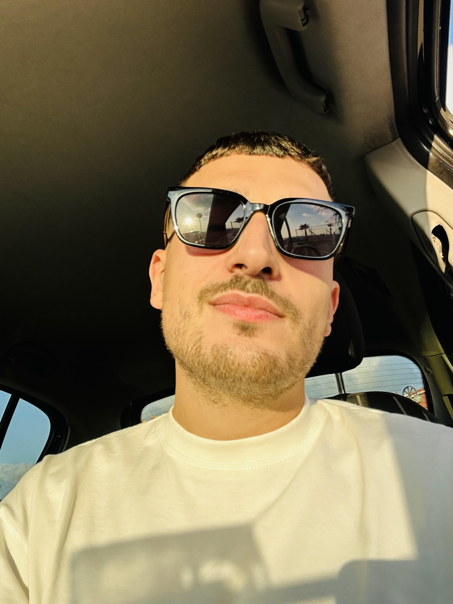

Scorri Giu
Massimo Emanuele Spinosa
EMAIL: MASSIMOSPINOSA72@GMAIL.COM

Mi chiamo Massimo Emanuele Spinosa , vengo da Mondragone ho 27 anni e mi sto approcciando per la prima volta al coding dopo anni di studio universitario distanti da questa realtà. Parallelamente a tutto la tecnologia mi ha sempre attirato e ho sempre avuto passione per videogames , pc e tutti i principali dispositivi.
I miei Hobbies :
Github
Oltre agli hobbies descritti mi piace partecipare a tornei di poker sportivo , passione che coltivo parallelamente alla mia passione per i viaggi date le vigenti normative in Italia riguardo questo gioco molto spesso confuso col gioco d'azzardo.
Le mie competenze
- Basi di Html
- Basi di Css
- Basi di Flexbox
Competenze da acquisire
- Html
- CSS
- Javascript